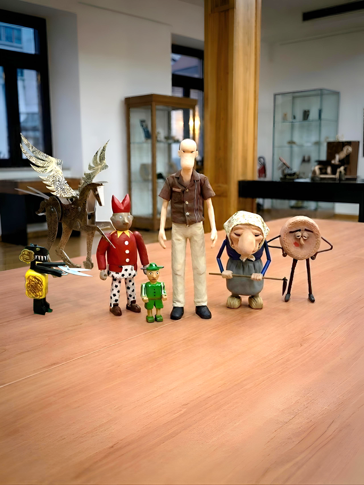
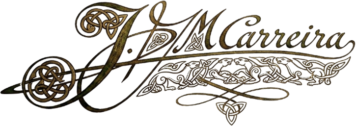

XXIX Festival Intercéltico d'Avilés y Comarca
A medianoche, cuando el salón de exposiciones se queda a oscuras, seis criaturas de madera y latón deciden que ya han posado suficiente.
Dedicatoria
A Daniel González, Ron Fuller, Keith Newstead y Paul Spooner: esta aventura mecánica en el corazón de Avilés nunca hubiera cobrado vida sin la chispa de vuestro genio colectivo.
A vosotros, los creadores visionarios que supisteis insuflar alma a la madera y ritmo al metal, dedicamos este viaje. Vuestras manos artesanas dieron forma y carácter a este elenco inolvidable, transformando simples figuras en verdaderos protagonistas de su propia leyenda.
Como maestros indiscutibles del autómata, vuestros diseños y mecanismos han inspirado asombro y alegría a través de los años; gracias por enseñarnos que la verdadera magia no está en el truco, sino en la perfecta coreografía de la física y el capricho.
Gracias a los cuatro por demostrarnos que el juego es el primer sueño que compartimos, y por recordarnos que, con un poco de ingenio y mucha imaginación, hasta las criaturas de madera más improbables pueden perseguir, a ritmo de gaita, la melodía de la libertad.

La colección
Recorre la historia tal y como ocurrió aquella noche en el Centro Social de Personas Mayores Las Meanas.
🎶 Toda buena fuga necesita música de fondo — escucha la banda sonora del relato: